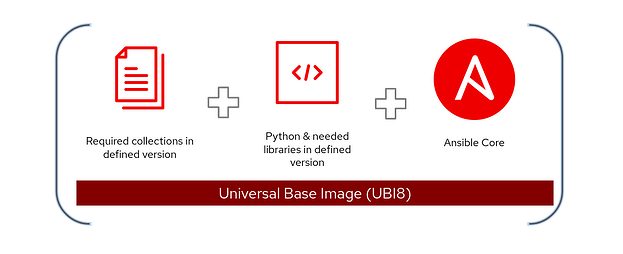
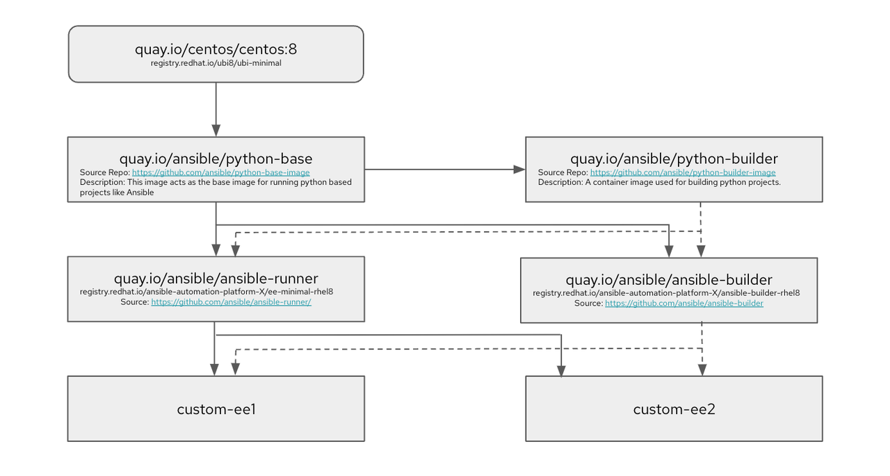

The anatomy of automation execution environments
The anatomy of automation execution environments
Red Hat Ansible Automation Platform 2 introduced major architectural changes, like automation mesh and automation execution environments, that help extend Ansible automation across your organization in a flexible manner, providing a single solution to all your organizational and hybrid cloud automation needs.
Automation execution environments are container images that act as Ansible runtimes for automation controller jobs. Ansible Automation Platform also includes a command-line tool called ansible-builder(execution environment builder)that lets you create automation execution environments by specifying Ansible Content Collections and Python dependencies.
In general, an automation execution environment includes:
- A version of Python.
- A version of ansible-core.
- Python modules/dependencies.
- Ansible Content Collections (optional).

In this blog, I will take you through the inner workings of ansible-builder and how all the above requirements are packaged inside automation execution environments and delivered as part of Ansible Automation Platform.
A tale of two ansible-builder packages
As all projects in Red Hat, ansible-builder follows an open development model and an upstream-first approach. The upstream project for ansible-builder is distributed as a Python package, and then packaged into an RPM for Ansible Automation Platform downstream. This also means that there are different ways to install the upstream package and the downstream ansible-builder.
NOTE: To get the downstream packages, you must subscribe to Ansible Automation Platform repos from Red Hat.
Upstream:
pip3 install ansible-builder
Downstream:
dnf install ansible-builder
This has sometimes led to confusions among users, as customers of Ansible Automation Platform can also install the Python package for free. There are minor differences between both upstream and downstream packages that you should understand before diving deeper into building automation execution environments.
As mentioned earlier, automation execution environments are container images that act as Ansible runtimes and ansible-builder is quite similar to generally available container engines such as Podman and Docker. So like any other container engine, the concept of building an image starts with a base image; that is where the upstream and downstream packages for ansible-builder differ. The base images used in upstream ansible-builder (Python package) as predefined constants are as follows:
EE_BASE_IMAGE='quay.io/ansible/ansible-runner:latest' EE_BUILDER_IMAGE='quay.io/ansible/ansible-builder:latest'
Base images in the downstream package are as follows:
EE_BASE_IMAGE='registry.redhat.io/ansible-automation-platform-22/ee-minimal-rhel8:latest' EE_BUILDER_IMAGE='registry.redhat.io/ansible-automation-platform-22/ansible-builder-rhel8:latest'
Upstream base images are available through Red Hat Quay.io, while the downstream ones come from Red Hat Ecosystem Catalog(registry.redhat.io), which requires authentication with a Red Hat account. The other difference in these images is that upstream ones use CentOS image as the base image while the downstream ones use Red Hat Universal Base Image (UBI). UBI offers greater reliability, security, and performance for official Red Hat container images compared with CentOS images.
One commonality for the upstream and downstream packages is that they both allow image configuration through an automation execution environment specification file called execution-environment.yml.
Whether you are an Ansible Automation Platform customer or a community user of ansible-builder, you can use UBI images as base images or the CentOS images for your automation execution environments based on the package or by passing a different set of base images to your automation execution environment specification file.
Why does the ansible-builder package have two base images?
Continuing from the previous section that introduce the upstream and downstream base images for ansible-builder, there are two arguments that specify which images to use:
- The
EE_BASE_IMAGEbuild argument specifies the parent image for the automation execution environment. - The
EE_BUILDER_IMAGEbuild argument specifies the image used for compiling type tasks.
For most container images, you generally only need one base image on top of which you add different instructions, also known as build steps, to create your final container image.
However, the base automation execution environment (ee-minimal) is built
using the multi-stage build concept of containers. The EE_BUILDER_IMAGE
build argument serves as the intermediary step to install Collections
and build dependencies to keep the base image size as low as possible.
Let's take an example: Suppose your Ansible Content Collection depends
on a Python package that needs to be compiled using python-dev package
(e.g. NumPy). Because python-dev is a compile time dependency, you don't
necessarily need it in the final package (you just need the NumPy
package). You wouldn't want to include python-dev in the final image to
keep the image size as low as possible. For this purpose, the
EE_BUILDER_IMAGE is used to build dependencies and then copy over only
the package wheels needed for the final automation execution
environment.
Does this matter if I want to build a custom automation execution environment?
In most cases it doesn't matter. When you build your automation
execution environment using ansible-builder, you just need EE_BASE_IMAGE
and not EE_BUILDER_IMAGE. However, you should understand how a compile
time binary dependency is applied in the execution-environment
definition file called bindep.txt. For the above example, if you need to
install the NumPy Python package as a dependency for your Collection on
UBI8, you specify the bindep.txt and requirements.txt as follows:
# bindep.txt python38-devel [compile platform:rhel-8] #compile time dependency
# requirements.txt
NumPy
There will be instances where the configuration in the automation execution environment specification isn't reflected or errors occur when you're building the automation execution environment. In these instances, it's important to understand the role for the EE_BUILDER_IMAGE. The next section explains this in more detail.
Automation execution environment design

The above diagram outlines how automation execution environments are designed. I have mentioned the upstream image name and the downstream counterparts in the same boxes.
For reference, CentOS 8 and UBI8 (for downstream) serve as the base images for the python-base container image, which acts as the image for running python-based projects, hence it bundles a version of Python that is supported by the ansible-core package (python 3.8 for reference).
This python-base image serves as the base image for both the python-builder image as well as the ansible-runner (ee-minimal downstream) image. To summarize the purpose of python-builder and ansible-builder images, they build Python projects such as ansible-core and any Collections that are dependent on Python. For instance, if your Collection relies on Python dependencies for which wheels need to be built on the machine itself, they are built on the python-builder image.
Finally, the ansible-runner (ee-minimal downstream) image includes a version of the ansible-core package. The ansible-builder image works in conjunction with this image to build Python wheels, so that the final automation execution environment size is minimal by only keeping things that are necessary to run your required automation. custom-ee1 and custom-ee2 in the diagram represent any custom automation execution environments that can be created using ansible-runner (ee-minimal downstream) and the ansible-builder image.
Verifying your base images
To start building your custom automation execution environments, you
should first verify which EE_BASE_IMAGE and EE_BUILDER_IMAGE are used in
ansible-builder by default. To verify, first create an empty automation
execution environment definition file called execution-environment.yml
touch execution-environment.yml
Then create a build context from the empty definition file by running this command in the same directory where you created the empty definition file:
ansible-builder create
This will create a context directory in your working directory which includes a Containerfile. Opening the Containerfile shows which images are set as the BASE and BUILDER images and tells you which ansible-builder you are using, the upstream or the downstream one. For instance, if you open the Containerfile created through the above process and a pip install of ansible-builder, you see the following content:
ARG EE_BASE_IMAGE=quay.io/ansible/ansible-runner:latest ARG EE_BUILDER_IMAGE=quay.io/ansible/ansible-builder:latest FROM $EE_BASE_IMAGE as galaxy ARG ANSIBLE_GALAXY_CLI_COLLECTION_OPTS= USER root FROM $EE_BUILDER_IMAGE as builder FROM $EE_BASE_IMAGE USER root COPY --from=builder /output/ /output/ RUN /output/install-from-bindep && rm -rf /output/wheels
In the first two lines you can observe that the images point to the upstream images. If you do the same process on the downstream install of ansible-builder, you find the downstream images in a similar Containerfile.
Using the ansible-builder context
The context building is an important aspect of ansible-builder. You can use the context to change the Containerfile and customize your automation execution environments to your needs. You can use this context and the knowledge of multi-stage builds using BUILDER and BASE images to build an automation execution environment in a disconnected environment. The following shows an execution-environment definition that pulls the BUILDER and BASE images from a private automation hub instance:
# cat execution-environment.yml
---
version: 1
build_arg_defaults:
EE_BASE_IMAGE: 'automation-hub.demolab.local/ansible-automation-platform-22/ee-minimal-rhel8:latest'
EE_BUILDER_IMAGE: 'automation-hub.demolab.local/ansible-automation-platform-22/ansible-builder-rhel8:latest'
dependencies:
python: requirements.txt
And the contents of the requirements.txt file are as follows:
# cat requirements.txt dnspython==1.15.0
Let's create a context for the above definition file, execution-environment.yml:
# ansible-builder create Complete! The build context can be found at: /root/disconnected_ee/context
The following issues may arise when building an automation execution environment in a disconnected environment (this example takes into account the building of a downstream image):
- Cannot reach the external yum repositories.
- Cannot pull Python dependencies from an external PyPI server, so using an internal PyPI proxy when building an automation execution environment.
- (Optional) SSL certificate issues when pulling from internal PyPI mirror.
Firstly, create a pip.conf that points to the local mirror:
# cat context/pip.conf [global] index-url = https://nexus-nexus.apps.celeron.demolab.local/repository/pypi-proxy/simple/
You add the above pip.conf file and the certificate to the context folder for the targeted automation execution environment creation to add these files inside your custom execution-environment.
Using the multi-stage build knowledge and context editing, edit the Containerfile. Note the sections marked in bold text as well as some comments. These are the changes to build an automation execution environment in a disconnected fashion.
# cat Containerfile ARG EE_BASE_IMAGE=automation-hub.demolab.local/ansible-automation-platform-21/ee-supported-rhel8:latest ARG EE_BUILDER_IMAGE=automation-hub.demolab.local/ansible-automation-platform-21/ansible-builder-rhel8:latest FROM $EE_BASE_IMAGE as galaxy ARG ANSIBLE_GALAXY_CLI_COLLECTION_OPTS= USER root ADD _build /build WORKDIR /build FROM $EE_BUILDER_IMAGE as builder ADD _build/requirements.txt requirements.txt RUN ansible-builder introspect --sanitize --user-pip=requirements.txt --write-bindep=/tmp/src/bindep.txt --write-pip=/tmp/src/requirements.txt ####### Changes to create EE in a disconnected environment # Remove ubi repo which tries to reach external links RUN rm -f /etc/yum.repos.d/ubi.repo # Add pip.conf for internal pypi proxy ADD pip.conf /etc/pip.conf # Add CA certificate and update trust ADD demolab-ca.crt /etc/pki/ca-trust/source/anchors/demolab-ca.crt RUN update-ca-trust ####### This marks the end of edits for the builder stage RUN assemble FROM $EE_BASE_IMAGE USER root COPY --from=builder /output/ /output/ ####### Changes to create EE in a disconnected environment # Remove ubi repo which tries to reach external links RUN rm -f /etc/yum.repos.d/ubi.repo # Add pip.conf for internal pypi proxy ADD pip.conf /etc/pip.conf # Add CA certificate and update trust ADD demolab-ca.crt /etc/pki/ca-trust/source/anchors/demolab-ca.crt RUN update-ca-trust ####### This marks the end of edits for the main image RUN /output/install-from-bindep && rm -rf /output/wheels
If you look closely in the above Containerfile, you can notice the additions that fix all the issues previously mentioned in both the BUILDER and the BASE image stages because both images use this information to pull and build Python dependencies.
Understanding what happens in each stage helps you understand where to edit your Containerfile, and at which stage, allowing you to make endless customizations to your custom automation execution environments.
Finally let's build the above execution-environment with the following command:
podman build -f context/Containerfile -t disconnected_ee:1.0
When the build succeeds, you should see a message like this:
--> 2316db485a1 Successfully tagged localhost/disconnected_ee:1.0 2316db485a1c4e7be4a687c682d0fc90335372d7e5564774f1ff6451840ac35f
Looking forward
Our ultimate goal is to make the developer experience as seamless as possible for customers. Ansible engineering teams are working on enhancements to the automation execution environment building experience, with several improvements already in the planning stage. Until those enhancements are available, this blog should help you tackle any challenges around the process of building automation execution environments. Following the upstream first model means you can also participate in community discussions and provide your thoughts and feedback through IRC. Please follow the link here to join us. One of the main enhancements to the automation execution environment experience is being discussed in this GitHub pull request, so you can participate in the GitHub discussions as well.